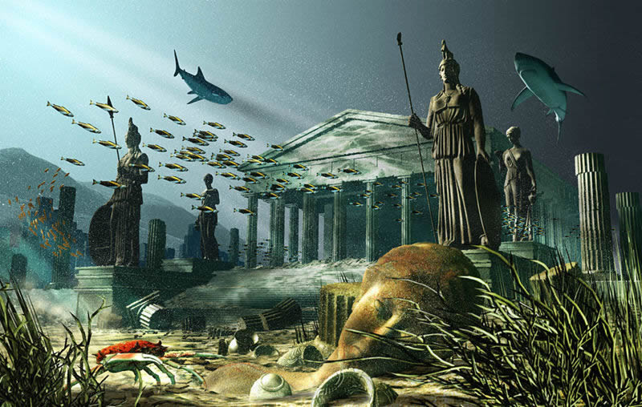

Descendientes de Poseidón y Clito se hacían llamar los atlantes y gozaban del favor de Zeus. Sus barcos navegaban por los siete mares en busca de los más exóticos productos. Las fachadas de sus templos estaban recubiertas de oro y otros metales preciosos. Eran mujeres y hombres de gran belleza e integridad. Pero un buen día decidieron conquistar el mundo. Su ejército entró en el Mediterráneo y fue sometiendo, uno a uno, a los pueblos ribereños hasta que llegaron al Peloponeso. Allí, los atenienses, solos, les plantaron cara y les derrotaron.
